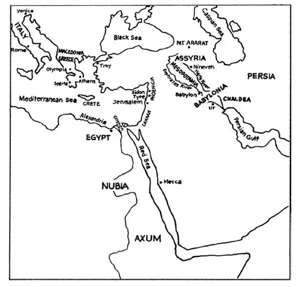
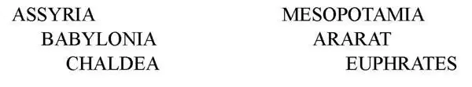
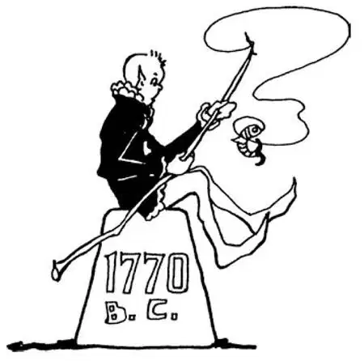

08
A Rich Land Where There Was No Money
没有钱的富饶之地

YOU have read in fairy tales of a land where cakes and candy and sugarplums grow on trees, where everything you want to eat or to play with can be had just by picking it. Well, long, long ago people used to think there had been really such a country, and where do you suppose they said it was? Somewhere near the Tigris and Euphrates Rivers—those rivers with the strange names I asked you to learn—and they called this spot the Garden of Eden. We do not know exactly where it was, for there is no such place now quite as wonderful as the Garden of Eden was supposed to be.

The ancient Mediterranean world （古代地中海世界）
Egypt was a land of one river, the Nile. The land of the Two Rivers had several names.
Let us suppose we are flying over the country in an airplane and looking down at the land between these two rivers. It is called Mesopotamia, which is two Greek words simply meaning between the rivers .
See the land over there by the upper Tigris. It is called Assyria.
See the land near where the rivers join each other. That is called Babylonia.
See the land near where they empty. That is called Chaldea.
And see over there is Mount Ararat, where it is supposed Noah's Ark rested after the flood.
Here are a lot of new names. A young friend of mine had a train of toy cars. He had noticed that the cars on which he had ridden had names, and so he gave his toy cars names also. He called them:

Babylonia was a very rich country, for the two rivers brought down and dropped great quantities of earth just as the Nile did in Egypt, and this made very rich soil. Wheat, from which we make bread, is called the staff of life. It is the most valuable of all foods which grow. It is supposed that wheat first grew in Babylonia. Dates in that part of the world are almost as important a food as wheat. Dates, too, grow there very plentifully. Now, you may think dates are something to be eaten almost like candy, but in Babylonia dates took the place of oatmeal. In the rivers there were quantities of good fish, and as fishing was just fun, you see that the people who lived in Babylonia—the Babylonians, as they were called—had plenty of good food. No one had any money in those days; people had pigs and sheep and goats, and a man was rich who had much of these goods. Early on, if a man wanted to buy or sell, he had to buy or sell by trading something he had for something he wanted.
Somewhere in Babylonia the people built a great tower called the Tower of Babel , which you have probably heard about. It was more like a mountain than a tower. They built other towers, too. Some say the Tower of Babel and towers like it were built so that the people might have a high place to which they could climb in case of another flood. Others give a different reason. They say that the people who built these towers came to Babylonia from farther north where there were mountains. In this northern land they had always placed their altars on the top of a mountain, to be close to heaven. So when they moved to a flat country like Mesopotamia and Babylonia, where there were not mountains, they built mountains in order to have a high place for the altar on top. To reach the top of these mountains or towers, they made, instead of a staircase on the inside, a slanting roadway that wound around the outside in somewhat the way a road winds around a mountain.
There was hardly any stone either in or near Babylonia as there was in Egypt, and so the Babylonians built their buildings of bricks, which were made of mud formed into blocks and dried in the sun. In the course of time, bricks of this sort crumble and turn back into dust again, just as mud pies that you might make would do. This is the reason why all that is left of the towers and the other buildings that were put up so long ago are now simply hills of clay into which the brick has turned.
The Egyptians wrote on papyrus or carved their history in stone, but the Babylonians had neither papyrus nor stone. All they had were bricks. So they wrote on bricks before they were dried, while they were still soft clay. This writing was made by punching marks into the clay with the end of a stick. It was called cuneiform , which means wedge-shaped, for it looked like little groups of wedge-shaped marks, like chicken-tracks, made in the mud. I have seen boys' writing that looked more like cuneiform than it did like English.
As the Babylonians watched their flocks by day and night, they watched also the sun and the moon and the stars moving across the sky. So they came to know a great deal about these heavenly bodies.
Did you ever see the moon in the daytime?
Oh, yes, you can.
Well, every once in a great while the moon as it moves across the sky gets in front of the sun and shuts out its light—just as, if you should put a plate in front of an electric lamp, the plate would block the light from the lamp. It may be ten o'clock in the morning and broad daylight, when suddenly the sun is covered up by the moon, and it becomes night and the stars shine out, and chickens, thinking it is night, go to roost. But in a few moments the moon passes by and the sun shines out once again. This is called an eclipse of the sun.
Now you may never have seen an eclipse of the sun, but some day you may. If you do, I hope you do not think the way ignorant people always have: they think that something dreadful is going to happen—the end of the world, perhaps, just because they have never seen such a strange sight before and do not know that it is a thing that happens regularly and that no harm comes from it.
Well, nearly twenty-three hundred years before Christ, in 2300 B.C., the Babylonians told before-hand just when there was going to be an eclipse of the sun. They had watched the moon moving across the sky and they had figured out how long it would be before it would catch up with the sun and cross directly over it. You see how much the old Babylonians knew about such things. Men who study the stars and other heavenly bodies are called astronomers , and the Babylonians, therefore, were famous astronomers. The Babylonians worshiped these wonderful heavenly bodies the sun, moon, and stars—that they knew so well.
The first king of Babylonia whom we know much about—and that much is very little—was Sargon I, who may have lived about the same time that the pyramids were built in Egypt.
About 1770 B.C. Babylonia had a king known far and wide for the laws he made. His name was Hammurabi, and we still have the code of laws he made though we no longer obey them. They were carved into a stone in cuneiform, and we have the stone. Sargon and Hammurabi are strange names like no one's name you ever heard before, yet they are real names of real kings who ruled over real people.
【中文阅读】
你在神话故事中读到过这样一个地方，那儿的树上长着蛋糕、甜品和糖果，你想吃的、玩的任何东西只要伸手就可以从树上摘到。是的，很久以前，人们认为，真有这样一个国家，你猜他们说的是哪个国家呢？靠近底格里斯河和幼发拉底河的某个地方——这两条河的名字挺奇怪，我曾要求你们要记住——他们把这个地方叫做“伊甸园”。我们无法确切知道它到底在哪里，因为现在没有任何地方像过去传说的“伊甸园”那般奇妙。
埃及这块陆地只有一条河流，那就是尼罗河。两河流域则分出许多块陆地，分别拥有不同的名字。
想象一下我们乘飞机飞过那个国家，俯瞰那两条河之间的那块陆地。那个地方叫美索不达米亚，是由两个希腊单词合在一起的名字，意思是“在河流之间”。
看看底格里斯河上游的那块陆地。它叫亚述。
看看两条河流交汇处附近的那块陆地。它叫巴比伦。
看看两条河流入海口处的那块陆地。它叫迦勒底。
再看看河流那边的阿勒山，人们猜想大洪水过后诺亚方舟就停在那儿。
有这么多新名字。我的一个小朋友有一组玩具车。他注意到自己乘坐过的汽车身上都有名字，所以他就给自己的玩具车也起了名字，他叫它们：
巴比伦是个富裕的国家，因为底格里斯河和幼发拉底河带来大量泥土，这些泥土沉积下来就变成了肥沃的土壤，就像尼罗河在埃及所发挥的作用一样。我们用来做面包的小麦被称作“生活主粮”，它是所有粮食作物中最有价值的一种。据推测小麦最早生长在巴比伦。在那块土地上，椰枣和小麦几乎一样是重要的食物，因为巴比伦也盛产椰枣。你可能认为，椰枣相当于蜜饯那样的零食，可是在巴比伦，它可是像现在燕麦片一样重要的粮食。两河流域也盛产肥鱼，但是捕鱼只是休闲娱乐，由此可见居住在巴比伦的人——当时人称巴比伦人——有多么丰富的食物。那时候，没人有钱，但是他们有猪、绵羊和山羊，谁养的家畜多谁就是富人。在早期，如果一个人想要买什么或卖什么，就得用自己的东西来换他想要的东西。
在巴比伦有个地方，人们造了一座宏伟的塔，叫“巴别塔”，这座塔你可能听说过，与其说它是一座塔，不如说它像一座山。他们也建了其他的塔。有些人说，之所以建巴别塔这类高塔是为了当洪水再来的时候，人们可以爬到一个高的地方。另一些人则提出了不同的看法。他们说，建造高塔的人是从遥远的北方山区来到 巴比伦的。在北方，他们经常把祭坛建在山顶上，为了更接近天堂，所以，当他们迁移到像美索不达米亚和巴比伦这样的平原地带，看不到山的时候，为了能有一个可以放置祭坛的高地，他们就建起了一座座“山”。他们没在里面建楼梯登上山顶或塔顶，而是在塔外修建了一条向上倾斜的路，这条路盘旋而上，有点像现在的盘山路。
和埃及不同，巴比伦国内和附近都没什么石头，所以，巴比伦人用砖来盖房子。这种砖是用泥做成的块状，再在太阳底下晒干而制成的。随着时间的推移，这种砖就会碎裂，重新变成了尘土，你如果用泥土捏成饼，这些饼也会是同样的结果。这就是为什么很久以前建造的这些塔和其他的建筑，如今只剩下一堆堆由砖块变成的土山。
古埃及人将他们的历史写在纸草纸上或刻在石头上，但是巴比伦人既没有纸草纸，也没有石头，他们有的只是一块块砖。所以，他们在砖还没被晒干的时候就在软泥上面刻下符号。这种符号是用树枝的尖端在黏土上用力刻画出来的，叫“楔形文字”，之所以叫楔形文字，因为它们是楔子形状，一个个楔形符号排列在一起就像泥巴上的鸡爪印。我见过有些小男孩写的字，看起来不像英语字母倒更像是楔形文字。
巴比伦人日夜看护着自己畜群的同时，也观察到太阳、月亮和星星在天空中的运行，所以，他们逐渐对这些天体了解得越来越多。
你在白天看到过月亮吗？
噢，没错，你可能看到过。
是啊，每隔一段时间就有这么一次，月亮在天空中运行恰好到了太阳的前面，遮住了阳光——就好比你在电灯前放一个盘子，盘子挡住灯光那样。时间可能是上午十点，大白天，突然，太阳被月亮遮住了，白天变成了黑夜，群星闪耀，鸡以为天黑了，都进了窝。可是，片刻之后，月亮一移开，太阳又光芒四射了，这种现象叫“日食”。
你可能还没见过日食，但总有一天你会见到的。如果你见到了，我希望你不要像有些愚昧无知的人那样认为可怕的事情就要发生——也许世界末日要降临。他们这样认为是因为以前从未见过这种奇怪的现象，不知道这是定期发生的一种自然现象，并没有什么灾害。
再接着说巴比伦人吧，大约在基督诞生前2300年，也就是公元前2300年左右，巴比伦人就能够预测日食发生的时间。他们观察月亮在天空中的运行，推算出再过多少天月亮会赶上太阳，遮住太阳。由此可见，古巴比伦人对这类事情有多了解吧。研究星星和其他天体的人叫“天文学家”，因此，巴比伦人是了不起的天文学家，他们崇拜太阳、月亮和星星这些神奇的天体——对它们非常了解。
巴比伦第一任国王是萨尔贡，他大约生活在埃及人建造金字塔的那个时代。要说我们对这位国王有多了解，也就仅此而已。
公元前1700年左右，巴比伦有一位国王因制定一部法典而远近闻名。他的名字叫汉谟拉比，现在我们仍然保存着这部法典，不过我们已经不必再遵从它了。法典 是用楔形文字刻在石头上的，这块石头我们还保存着。萨尔贡和汉谟拉比是很奇怪的名字，你从未听说过吧，但是它们是真实国王的真名，他们统治下的人民也是真正生活在那个时代的人。

公元前1770年